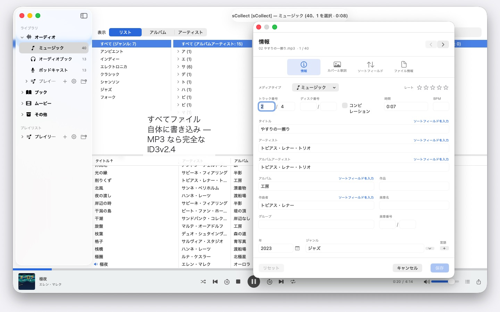
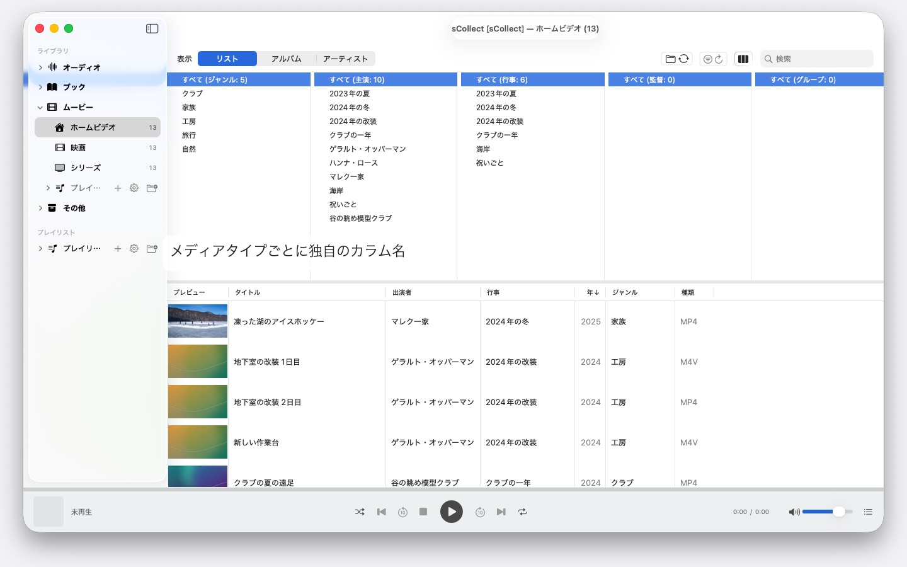

何千人ものアーティスト、複数のMac、macOS 14以降ならどれでも。sCollectは音楽、映画、本を整理し、入力した情報をファイルそのものに書き込みます。アカウントもクラウドも不要です。


sCollectは、集められるものすべてのためのライブラリです。ミュージック、ムービー、ホームビデオ、オーディオブック、ポッドキャスト、電子書籍 — そして、そもそもメディアファイルではないもの、たとえばコインや切手も、写真に撮って説明を添えて収められます。カテゴリの名前は、あなたが決めます。
普通のカタログとの違いは、sCollectが書き戻すことです。エディタで入力した内容は、データベースに収まるだけでなく、ファイル自身のメタデータに記録されます。だから、いつかsCollectを使わなくなっても、あなたの手仕事は残ります。
自分で整理しなくても、整う
インポートのとき、sCollectはどのファイルもあるべき場所に置きます。メディアタイプ、アーティスト、アルバム、日付のうち、あなたが設定したものに従って。メディアタイプごとに別のフォルダを持たせることもでき、別のハードディスクでもかまいません。ムービーは大容量の外付けディスクに、ミュージックは高速な内蔵ディスクに。
コレクションを今ある場所に置いておきたいなら、代わりにリンクします。リンクされたファイルには、いっさい手を触れません。
写真と動画を撮る人のために
写真や動画を撮るなら、メディアタイプを日付で整理する設定にします。インポートのとき、ファイルは年と月のフォルダに収まり、ファイル名にはファイル自体から読み取った撮影日時が入ります。動画では、カメラがタイムゾーンを記録していなければ、その旨を知らせます。IMG_のようなカメラの接頭辞は、希望すればタイトルから取り除かれ、ISO形式の日付が加わります。リストとディスクの並び順も同じになります。
メタデータが、ファイルまで届く
単一の項目のためのエディタと、まとめて編集するためのもうひとつのエディタ。どちらも、ファイルが本来持っている形式に書き込みます。MP3ならID3v2.4、MP4とM4Aのタグ構造、FLACとOGGのVorbisコメント、AIFFとWAVのテキストブロック、DSD録音ならDSF、画像ならEXIF、IPTC、XMP。
ある形式にその項目のためのフィールドがないときや、ファイルがコピー保護されているときは、値を捨てる代わりに、sCollectが横にサイドカーファイルを置きます。ファイルがライブラリと食い違っていれば、上書きする前にエディタが知らせます。
作業を短くするもの
- すべてのフィールドにまたがる検索/置換、変更の前にプレビュー
- カテゴリ全体にわたる重複の検出、どちらの方が良いかを筋道立てて示す判定付き
- ミュージック管理アプリのようなカラムブラウザ、列ごとの複数選択に対応。何千人ものアーティストも延々とスクロールせずに済みます。頭文字でA、AB、ABBとまとめられ、3回のクリックで目的の場所へ
- 音声と映像の再生、プレイリストと記憶された再生位置つき
欠落したファイルは、探すのではなく見つける
一度の実行で、ファイルがもう無い項目すべてにマークを付け、その結果を記憶します。専用の表示はそうした項目だけを示し、あなたがリンクし直したものを順に片付けていきます。
複数のMac、ひとつのコレクション
ライブラリはコピーを登録できます。主たる蔵書に加えた変更は、到達できるすべてのコピーへあとから伝わります。ファイルとタグも含めて。コピーが今オフラインなら、変更はそのまま残り、そのコピーが戻ってきたときに追いつきます。
それぞれのMacでどのmacOSが動いていても構いません。macOS 14のMacもmacOS 26のMacも同じコレクションを読み込み、システムアップデートでコレクションが変換されることもありません。ただし、コピーはバックアップではありません。
インポートとエクスポート
既存のコレクションはiTunes-XMLから取り込めます。レートとプレイリストも一緒に。書き出しはsCollect-XML、引っ越しとバックアップのための失われるもののない形式で。ほかにApple Music用のプレイリストとして、あるいはiTunes-XMLとして。
あなたのMacの中だけで
アカウントなし、クラウドなし、解析なし、広告なし。sCollectは、あなたが渡したフォルダだけを相手にします。
そのため、sCollectはCDの読み込みも、インターネットからの曲情報の取得も行いません。どちらもApple Musicがすでにできることです。Apple MusicでCDをAAC、Apple Lossless、MP3のいずれかで読み込めば、ファイルは曲情報を持ったままsCollectに入ってきます。こうして、あなたが何を集め、どう整理しているかを、どのサービスも知ることはありません。
自由に選べる25の言語に対応し、どの言語にも完全なヘルプが付いています。
対応言語：日本語、英語、ドイツ語、フランス語、スペイン語、イタリア語、ポルトガル語（ブラジル）、オランダ語、スウェーデン語、ノルウェー語、フィンランド語、ポーランド語、チェコ語、クロアチア語、ハンガリー語、ルーマニア語、トルコ語、ロシア語、ウクライナ語、ペルシア語、タイ語、韓国語、中国語（簡体字）、中国語（繁体字）、中国語（繁体字・台湾）。
- macOS 14 以降が必要
- 26 言語に対応
- サポート： SwiftAppsBavaria@gmx.net
その他のApp
SwiftRename
ファイルを一括でリネーム — 撮影日に基づく名前や連番を付けたり、そのまま年別・月別のフォルダに振り分けたりできます。
sVectorLift
古いベクタークリップアートを開いて表示し、SVGとして保存 — CorelDRAW、Windows Metafile、CGM。
sName2Date
ファイル名の日付を撮影日時として写真、動画、録音に書き込み — IMG_20240115_103000.jpg のようなファイルが、どの写真管理アプリでも正しく並ぶようにします。画像や動画のデータには手を加えません。PDFなど撮影日時を持たないファイルにはファイルの日付を設定し、必要に応じて名前もISO形式にそろえます。フォルダ階層ごとまとめて処理でき、どの処理も ⌘Z で取り消せます。
sName2Date Lite
一度に 1 つのファイルを扱う版。ファイル名の日付を撮影日時として写真、動画、録音に書き込み、手動で設定し、名前をISO形式にそろえ、すべてを ⌘Z で取り消せます — sName2Date と同じ機能を備えていますが、フォルダ単位の処理はできません。
sCollectPlay
メディアライブラリのためのプレーヤー。単にフォルダ、iTunes XML、またはsCollectライブラリから、音楽、映画、オーディオブック、ポッドキャストを再生 — ファイルのタグは一切変更されません。プレイリスト、音声トラック、字幕トラックに対応し、映画ではスローモーションとコマ送りも可能。MKV、AVI、DSDなど、macOSが自身で再生できないものは外部プレーヤーに渡します。
sCollectPlay Lite
sCollectPlayの軽量版。フォルダ、iTunes XML、またはsCollectライブラリを開くだけで、音楽、映画、オーディオブック、ポッドキャストを再生 — プレイリスト、音声トラック、字幕トラック、スローモーション、コマ送りに対応。1セッションにつきソースは1つ。カラムブラウザ、自分で作成するプレイリスト、最近使ったソースはフル版専用です。
sBikeBridge
ポータルにアップロードせずにライドを分析。FIT形式で記録するあらゆるサイクルコンピュータのFITファイルに加え、GPXとTCXも読み込めます。ライドはMac上の専用ライブラリに保存 — 地図、パワー、心拍数、写真、メモ付きで、重複はインポート時に検出されます。年別・月別の指標と、距離、獲得標高、所要時間によるフィルタでライドを比較できます。地図は必要に応じてオフラインでも利用できます。